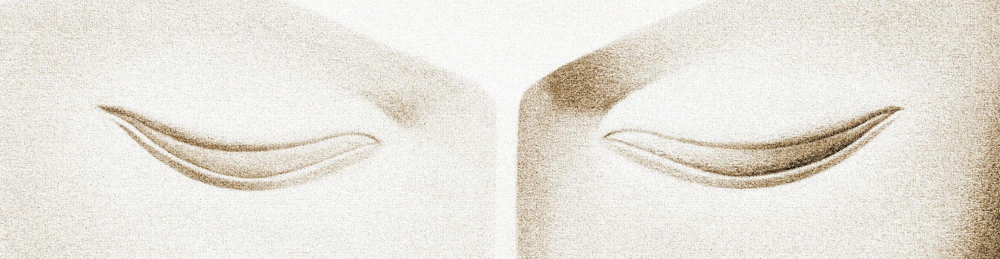

The teachings of Culadasa, free for everyone
That his work be freely and equally available to all students.
— The Yates family, on his wishes in his final days
Culadasa, John Yates Ph.D., spent four decades in the Tibetan and Theravādin traditions and taught physiology and neuroscience. His book The Mind Illuminated joins the two. Everything he taught is here, free.
Find your way in
Start here
Seven steps from your first sit to a daily practice, using his own handouts and guided meditations.
Begin →Learn the method
Attention and awareness, the ten stages, insight, and practice in daily life, in his words.
Learn →Topics
Search over 172,000 words of his handouts, essays and 441 recorded questions and answers.
Search →Find a teacher
The 48 teachers certified in The Mind Illuminated Teacher Training Program, by name and place.
Find →Most discussed: mind · experience · awareness · meditation · attention · practice · stage · insight · mental · feel
Watch
From the archive
Talks from his YouTube channel, and the May 2021 AMA session. All videos · Culadasa AMA sessions
How do you know whats true? - Culadasa at NY Insight
Culadasa May 2021 Patreon Q&A No1

The book
The Mind Illuminated
A complete meditation guide integrating Buddhist wisdom and brain science, written with Matthew Immergut and Jeremy Graves. Its ten stages map the path from a first, distracted sit to tranquility and equanimity.
- Establishing a practice
- Interrupted attention and overcoming mind-wandering
- Extended attention and overcoming forgetting
- Continuous attention and overcoming gross distraction and strong dullness
- Overcoming subtle dullness and increasing mindfulness
Conversations
Culadasa in conversation
Pandemic – Culadasa
Culadasa as the featured guest of the Guru Viking Podcast’s pandemic series, published 20 March 2020.
Listen →Mind Illuminated – Culadasa
A long conversation about The Mind Illuminated and his four decades of practice in the Tibetan and Theravādin traditions, and his earlier careers in neuroscience and complementary medicine.
Listen →Culadasa on Stream Entry
Whether more people are reaching stream entry these days, what it is, and the retreat centre he and his wife ran in southeastern Arizona. A full transcript is on the page.
Listen or read →
All of Culadasa’s students are his successors.
— The Yates family